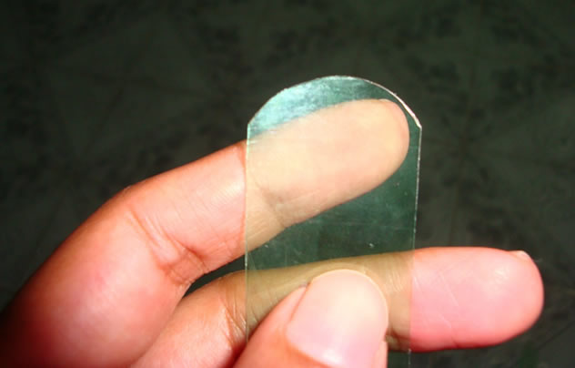
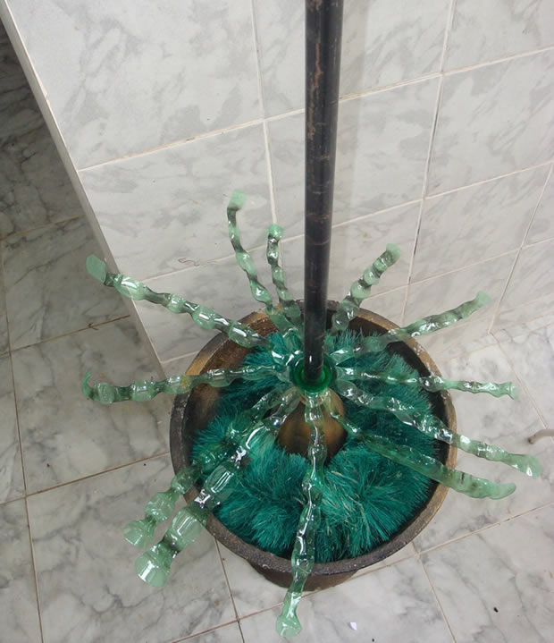
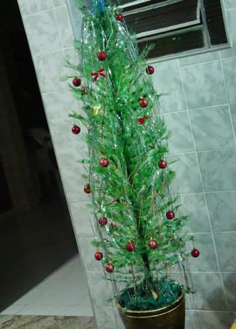

NOTÍCIAS EM DESTAQUE
Como fazer árvore de natal com garrafas pet
O Natal é uma época do ano mais do que especial. Para celebrar essa data em grande estilo, você pode usar materiais recicláveis para produzir belos enfeites. Assim você poderá caprichar na decoração de Natal de maneira bastante econômica. Pensando nisso, vamos mostrar como fazer uma árvore de Natal com garrafas PET. As fotos desse passo a passo são do blog Sonho de Artesanato. Veja só como é simples fazer um árvore em casa…
Materiais Necessários
- Garrafas PET
- Tesoura
- Vela
- Vaso com suporte de ferro, PVC ou madeira
- Enfeites para árvore de Natal
Passo a Passo

1) O primeiro passo é retirar o fundo da garrafa pet. Guarde-o para ser usado em outros projetos.

2) Em seguida, corte a lateral da garrafa em tiras e arredonde as pontas.
3) Pegue cada tira e passe pela chama de um vela para modelar. Depois de fazer isso com todas as tiras, veja só como fica o resultado….
4) Pegue um vaso grande e coloque um peso e um suporte dentro dele. Essa estrutura pode ser feita, por exemplo, com concreto e cabo de vassoura.

5) Se o vaso for muito grande, preencha o espaço livre com o material de sua preferência. Algumas opções são jornal amassado, espuma ou areia. Depois cubra o vaso com festão verde. Isso dará o acabamento.
6) Depois é só ir colocando cada garrafa em um suporte para montar a sua árvore de garrafa pet. Acrescente quantas garrafas forem necessárias. Se quiser um efeito diferente, vá cortando as tiras em comprimentos menores. Então você pode colocar as tiras com comprimentos maiores na base da árvore e as tiras com comprimentos menores no topo.
